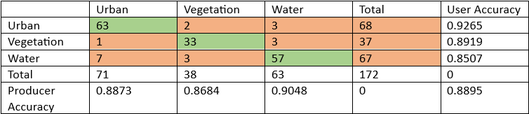
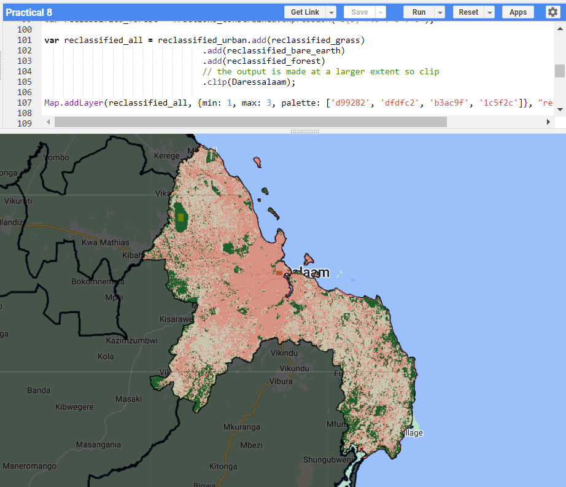
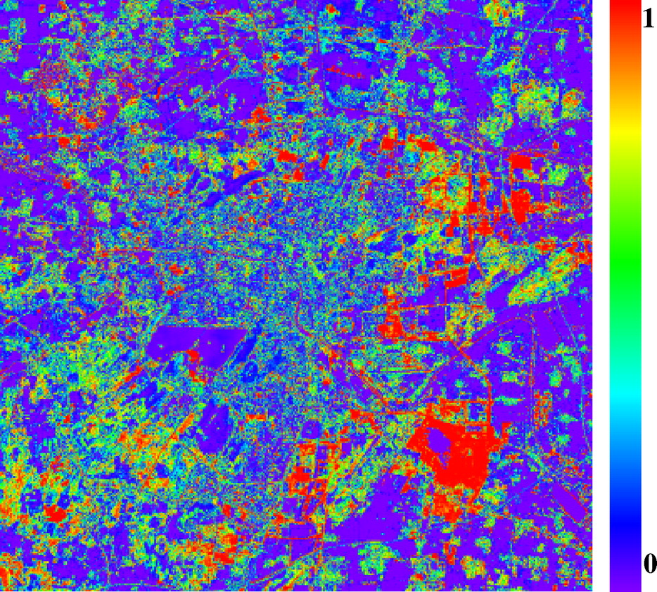

7 Classification II
In the second of a two-part lecture series on classification, we covered how Dynamic World, Object Based Image Analysis (OBIA), Subpixel Analysis, Accuracy Assessment and Spatial Autocorrelation.
7.1 Summary
To evaluate the accuracy of an output, we require certain metrics. This can be visualised through a confusion matrix which summarises the classification/misclassification of pixels for different classes and the image as a whole. User and Producer’s Accuracy are just two examples that can be seen in this matrix.
Sample confusion matrix. Green represents true values while orange represents false values. Source: Author’s own
Producer Accuracy (read across rows for each class) refers to the percentage of pixels that are correctly classified (true positive) relative to the all pixels in that reference class (true positive + false negative). In other words, this is concerned with “errors of omission…or how accurately the classification results meet the expectation of the creator” (Esri, n.d.).
User Accuracy (read across columns for each class) refers to the percentage of pixels that are correctly classified (true positive) relative to all pixels classified as that particular land cover (true positive + false positive). In other words, this is concerned with “errors of commission, where pixels are incorrectly classified as a known class when they should have been classified as something different” (Esri, n.d.).
There is a trade-off in the attempting to balance between user and producer accuracy (Foody 2020). Increasing producer accuracy involves minimising false negatives by trying to correctly identify the pixels as belonging to a certain class. However, this may lead to the system generating too many false positives, which can lower user accuracy due to more incorrect predictions. On the other hand, to enhance user accuracy, the system becomes more conservative and only classifies pixels as belonging to a certain class if it highly confident. This approach aims to minimise false positive but may result in missing out pixels that actually belong to the class. For an interactive example demonstrating this trade off, refer to Wilber (2022).
A comprehensive performance metric that considers both producer and user accuracy is the F1 score (Wilber 2022). It is calculated using the formula:
F1 = \(\frac{2.Precision.Recall}{Precision+Recall}\)
where precision reflects user accuracy while recall reflects producer accuracy. Alternatively, the formula can be interpreted as:
F1=\(\frac{True Positive}{True Positive+0.5.(False Positive+False Negative)}\)
Despite its utility, the F1 score has limitations as it fails to account for true negatives or accurately classified negative categories. The F1 score may hence be biased if there are more negative pixels than positive ones.
Another issue we covered was spatial autocorrelation. The underlying concept is that nearby pixels are more similar than distant pixels which may violate the assumption of independence and affect the model’s generalisability to other spatial contexts (Karasiak et al. 2022). To address this issue, ‘spatial partitioning’ is used to ensure the training and testing datasets are not geographically close to each other. In other words, the observations are split into spatially disjointed subsets using methods such as the k-means metric (Lovelace, Nowosad, and Muenchow 2019).
7.2 Application
In the practical, we did subpixel, object-based, image and super pixels classification. Below is the subpixel classification output for Dar es Salaam, Tanzania, using Landsat 8 data. The general idea behind subpixel analysis is that many features are smaller than the size of the pixel, which may lead to inaccurate results or information loss (Suresh and Jain 2018). Subpixel analysis addresses this limitation by estimating and calculating the proportion of different land cover types within each pixel.

Subpixel analysis for Dar es Salaam (Green=Forest, Pink=Urban, White=Grass). Source: Author’s Own
Other applications in subpixel analysis include change detection of urban landcover in cities such as Shanghai and Xuzhou, particularly when dealing with satellite images of lower spatial resolutions and complex urban environments with multiple land uses (Du et al. 2014). In this approach, a spectral mixture model is applied to the imagery to decompose each pixel into its constituent endmember, in other words spectrally pure members such as water and vegetation. The process also estimates the proportion of each endmember within each pixel. Change detection is then carried out at a subpixel level to identify subtle changes in the land use within the pixels which may not be so apparent if one was to consider the pixel as a whole.

Landcover change intensity in Shanghai from 2005 to 2009. Source: Du et al. (2014)
Subpixel analysis can also be applied in the physical environment such as estimating river wetted width (RWW) to comprehend hydrological and biogeochemical processes. Challenges arise along river boundaries where pixels contain a mix of water and land covers, or the rivers have small width (Ling et al. 2019). To address these challenges, subpixel analysis, combined with superresoluton mapping, enables accurate mapping of the geographical extent of water bodies and reduces fractional errors in the classification process.
7.3 Reflection
This week’s lesson was a good reminder than features on the ground do not neatly fall within a pixel and hence there is a need for different classification methods such as subpixel and object-based. Furthermore, while the practical exercise focused on distinct classes such as urban, vegetation, water and bare earth, it is important to remember that the urban environment consists of many diverse land use such as informal settlements, factories, parks, schools, reservoirs. Although a repeat of last week’s reflection, classification is only part of the process of remote sensing and can be combined with other methods such as change detection.
I also liked the throwback to account for spatial autocorrelation from the GIS module in my previous semester else there could be overfitting issues that would affect the model’s generalisability to new datasets.